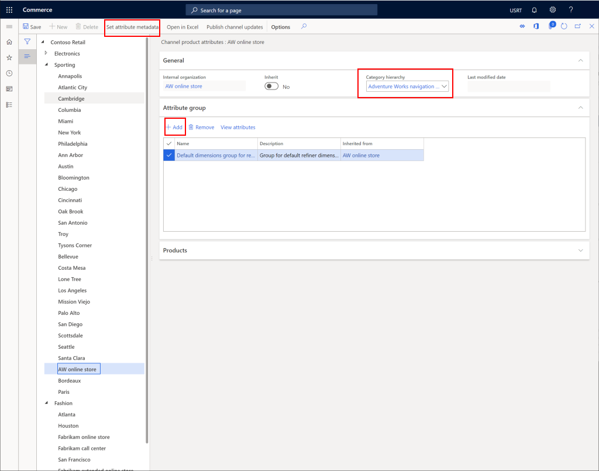
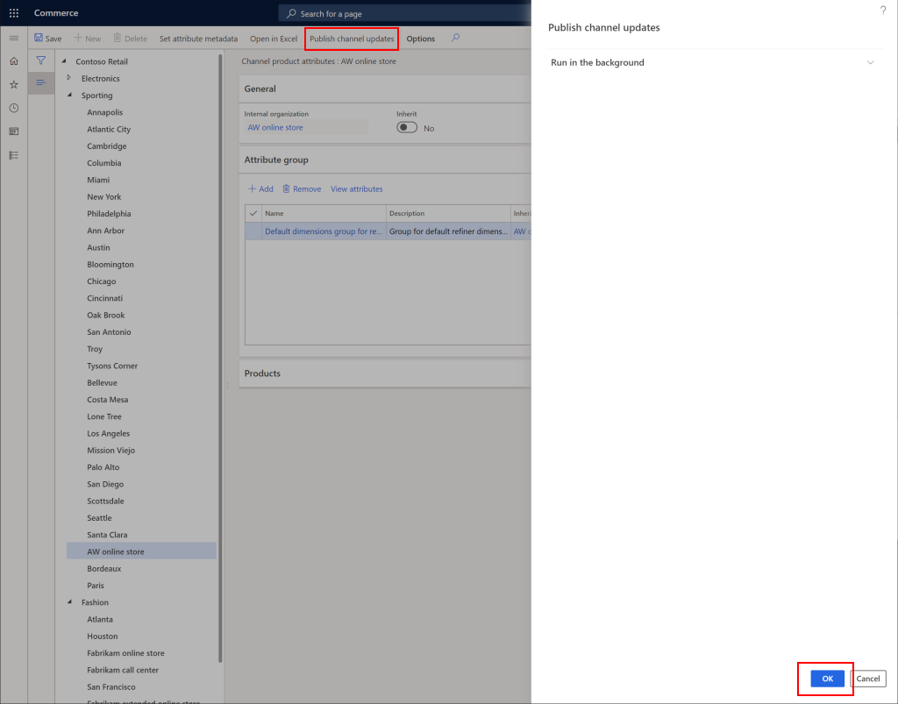

Einen Kanal zur Verwendung einer Kanalnavigationshierarchie konfigurieren
Important
Dynamics 365 Retail ist jetzt Dynamics 365 Commerce und bietet umfassende Handelsfunktionen für alle Kanäle – von E-Commerce über Shops bis hin zu Callcentern. Weitere Informationen zu diesen Änderungen finden Sie unter Microsoft Dynamics 365 Commerce.
In diesem Thema wird beschrieben, wie Sie einen Kanal für die Verwendung einer Kanalnavigationshierarchie in Microsoft Dynamics 365 Commerce konfigurieren.
Übersicht
Kanalnavigationshierarchien organisieren Produkte in Kategorien, sodass die Produkte auf einer E-Commerce-Website oder an Verkaufsstellen (POS) durchsucht werden können. Einzelhandels- und Onlinekanäle müssen mit Kanalnavigationshierarchien konfiguriert werden.
Den Kanal konfigurieren
Gehen Sie folgendermaßen vor, um einen Kanal für die Verwendung einer Kanalnavigationshierarchie zu konfigurieren.
- Wechseln Sie im Navigationsbereich zu Module > Retail und Commerce > Kanaleinstellungen > Kanalkategorien und Produktattribute.
- Wählen Sie den zu konfigurierenden Kanal aus.
- Wählen Sie im Aktivitätsbereich Attributmetadaten festlegen.
- Wählen Sie in der Dropdownliste Kategoriehierarchie die entsprechende Kanalnavigationshierarchie aus.
- Wählen Sie im Aktionsbereich Speichern aus.
- Fügen Sie unter Attributgruppe alle Attributgruppen hinzu, die globale Attribute für alle Knoten sein werden.
Das folgende Bild zeigt, wie Sie einen Kanal für die Verwendung einer Kanalnavigationshierarchie konfigurieren.

Attributmetadaten festlegen
Durch Festlegen der Attributmetadaten können Attribute auf jedem Knoten konfiguriert werden.
Führen Sie die folgenden Schritte aus, um Attributmetadaten festzulegen.
- Wählen Sie im Aktivitätsbereich Attributmetadaten festlegen.
- Wählen Sie für jeden Knoten Kanalproduktattribute aus.
- Legen Sie Attribut auf Kanal anzeigen auf Ja und Kann verfeinert werden auf Ja fest, um die Filter für diesen Kanal zu aktivieren.
- Nachdem Sie jeden Knoten wie gewünscht konfiguriert haben, wählen Sie im Aktionsbereich die Schaltfläche Speichern zum Speichern aus.
- Wählen Sie das X in der oberen rechten Ecke, um diesen Bildschirm zu verlassen und zur Seite Kanalkategorien und Produktattribute zurückzukehren.
Die folgende Abbildung zeigt ein Beispiel für eine Reihe von Kanalproduktattributen, die auf einem Kanalkategorieknoten konfiguriert sind.

Änderungen veröffentlichen
Damit die Änderungen wirksam werden, müssen Sie die Änderungen veröffentlichen.
Führen Sie folgende Schritte aus, um die Änderungen zu veröffentlichen.
- Wählen Sie im Aktionsbereich Kanalaktualisierungen veröffentlichen aus.
- Wählen Sie im Bereich Kanalaktualisierungen veröffentlichen OK aus.
Das folgende Bild zeigt, wie Kanalaktualisierungen veröffentlicht werden.
